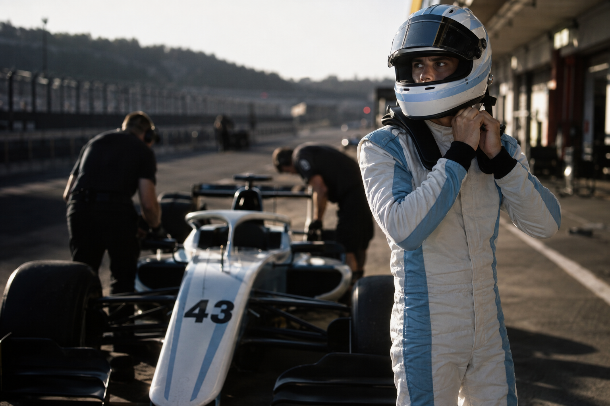

Alpine · Monoplazas 1Pilar, Buenos Aires · 23 años
Franco
Colapinto
43Temporada2026
Campeonato14.ºsubió 2
Puntos18
Mejor resultado7.ºCanadá
Vs. compañero4–5en carrera
Carrera a carrera
Ganó puestos Perdió
Progreso
Contra su compañero
Clasificación36
Carrera45
La brecha media bajó de 0.42s a 0.18s en las últimas tres fechas.
Puestos en carrera
+17balance neto- Miami+6
- Imola+4
- Canadá+4
Declaraciones
“Ahora entiendo mejor dónde está el tiempo. El auto me pide ser paciente en la entrada y agresivo cuando vuelvo al acelerador.”Después del GP de Canadá
Trayectoria
Campeón argentino y primeros pasos en Europa.
9 temporadasCampeón en su segunda temporada.
11 victorias · 13 polesDos temporadas de adaptación y velocidad.
4 victoriasGanador desde su debut; cuarto en 2023.
4 victorias · 10 podiosPrimera victoria en Imola.
2 podiosNueve grandes premios y los primeros puntos.
5 pts · mejor 8.ºEl capítulo actual.
18 pts en 2026